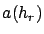
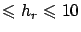
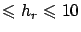

Siguiente: Entorno suburbano
Subir: Modelo de Okumura-Hata
Anterior: Modelo de Okumura-Hata
Índice General
donde
 es el factor correctivo debido a la altura del
receptor y depende del tamaño de la ciudad.
Para ciudades de pequeño o mediano porte:
Para ciudades grandes:
donde
 m m.
m m.
SAPO